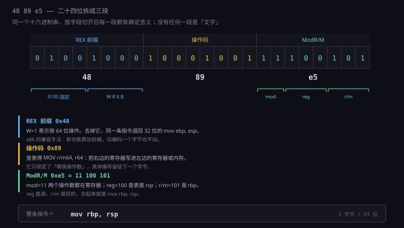
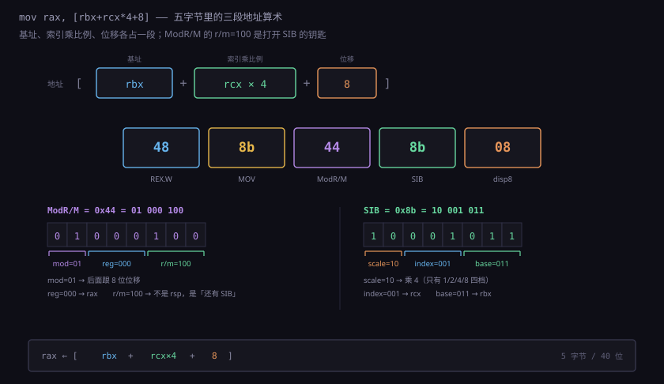
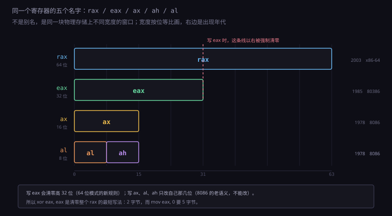
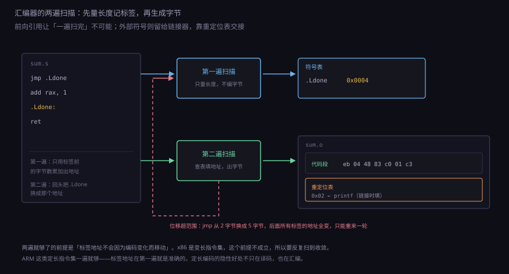
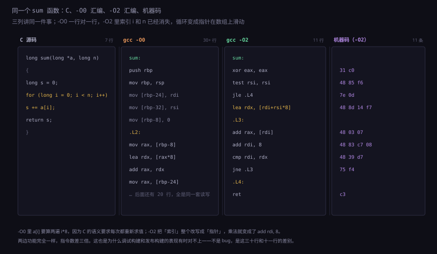

约 1.0 万字 · 6 张图 · 读完你能把 48 89 e5 这串字节逐位拆开讲清楚，
知道汇编器为什么必须扫两遍，也明白汇编写起来像机器、
用起来却还是靠人脑记住十几种东西
rax 这种怪名字，
汇编器为什么要读两遍才能生成目标文件，
以及——既然汇编和机器码这么近，为什么没人用它写整个软件。
先把三个字节摆在桌上：48 89 e5。
任何一台 x86-64 机器上运行的程序，几乎每进一个函数都会执行它。
它是这样三个十六进制数，占三个字节，二十四位。
如果把它当作数据看，它可以是整数 4745189，可以是三个 ASCII 字符
H、\x89、\xe5，也可以是某个浮点数的一半。
但 CPU 取指单元把它拿在手里时，不这么看。
CPU 看到 0x48 时知道「接下来这条指令要按 64 位操作」，
看到 0x89 时知道「这是一条搬运指令，从寄存器搬到寄存器或内存」，
看到 0xe5 时知道「目的地在 rbp，来源在 rsp」。
三个字节连起来的意思只有一句话：
mov rbp, rsp —— 把栈指针的值抄一份给帧指针。
这句话印在纸上，人一眼就懂：mov 是 move，rbp 是栈帧基址，
rsp 是当前栈顶。可同样的意思，写成 48 89 e5 就没人认得出。
不是记不住，是这三个字节里没有一个字符对应「mov」这件事——
编码方式是查表查出来的，不是拼出来的。
这就是汇编存在的全部理由。它不改变语义，不增加能力，
只做一件事：给每一个字节图案起一个能念、能记、能写的名字。
0x89 加 0xe5 这个组合叫 mov rbp, rsp；
0xb8 后面跟四个字节叫 mov eax, 立即数；
0xc3 一个字节叫 ret。
名字是人起的，字节是机器要的，汇编器负责在两者之间翻。
所以「汇编语言」这个词容易误导。它听起来像一门语言， 有语法、有抽象、有编译器帮你想事。 实际上它更接近一份带助记符的编码表： CPU 有多少种指令，汇编就有多少种写法，多一个也没有。 你在汇编里写不出「循环」，只能写「比较、跳回去」； 写不出「数组」，只能写「基址加偏移」。 语言该有的东西，它一样都没有。

0xe5 的最后三位是 101，查表正好是 rbp；中间的 100 是 rsp。整条指令没有任何「字符串」成分，全是查表查出来的编号。最早的计算机没有汇编。程序员在纸带上打十六进制数字， 或者更早，直接拨开关。那时候写一个加法程序， 要查一张印在纸上的编码表，把每个操作翻译成数字， 再一位一位核对有没有打错。错误率极高，而且改一行要重算后面所有的地址。
1950 年前后，出现了一个很朴素的改进：既然每次都要查表，
为什么不干脆让机器来查？程序员写 mov、add、jmp
这些字母，由一个程序把它们翻译成数字。这个程序就是汇编器（assembler），
那些字母就是助记符（mnemonic）。
注意这一步的收益不在「省事」上。省事只是副产品。
真正的收益是：程序第一次变成了可读的文本。
一份十六进制转储，除了作者没人能看懂；
一份写满 mov、cmp、jne 的清单，
任何会这门机器的人拿过来都能读。这意味着程序可以被检查、被修改、被传给别人。
软件能从个人手艺变成一门工程，起点就在这里。
助记符的取名有一套大致规律，理解它比背指令表有用：
| 前缀或缩写 | 含义 | 例子 |
|---|---|---|
mov | move，搬运（其实是复制，源不变） | mov rax, rbx |
lea | load effective address，只算地址不取内存 | lea rax, [rbx+8] |
add / sub / imul / idiv | 加、减、有符号乘、有符号除 | add rsp, 8 |
and / or / xor / not | 按位与、或、异或、取反 | xor eax, eax |
cmp / test | 做减法或与运算，只改标志位，不留结果 | cmp rax, rbx |
j + 条件 | jump，条件跳转 | je、jne、jle、jg |
push / pop / call / ret | 栈操作与调用返回 | call sum |
这张表不长，但已经够覆盖绝大多数代码。
有一个细节值得留意：mov 这个名字是错的。
它不移动，是复制。执行 mov rax, rbx 之后，rbx 里的值还在。
历史上还有过一条真正会「搬空」的指令 movs（字符串搬运，配合 rep 前缀），
但普通 mov 一直是复制。这个名字的错误沿用了七十年，
所有教材都得专门提一句，也算汇编的一个小传统。
另一个规律是后缀表示宽度。AT&T 语法里写作 movb、movw、movl、movq，
分别是 1、2、4、8 字节（byte、word、long、quad）。
Intel 语法不写后缀，宽度从操作数上看——mov al, 1 是 1 字节，
mov eax, 1 是 4 字节。两种风格各有拥趸，后面第 8 节专门讲。
x86 的指令是变长的，从 1 字节到 15 字节都有。变长的代价是译码麻烦，
好处是常用指令可以编得很短——push rax 只占 1 字节（0x50），
而 RISC 架构里同样的操作至少要 4 字节。这是 x86 在代码密度上的老本行，
也是它在嵌入式之外几乎通吃的部分原因。
一条 x86-64 指令最多由五段拼成，顺序固定：
| 段 | 长度 | 作用 | 例子 |
|---|---|---|---|
| 前缀 | 0～4 字节 | 改宽度、改地址大小、加锁、重复 | 0x48（REX.W，64 位） |
| 操作码 | 1～3 字节 | 这条指令干什么 | 0x89（MOV，寄存器到寄存器/内存） |
| ModR/M | 0～1 字节 | 操作数在哪：寄存器还是内存，用哪个寄存器 | 0xe5 |
| SIB | 0～1 字节 | 内存操作数带「基址+索引×比例」时才有 | 0x8b |
| 位移 / 立即数 | 0～8 字节 | 地址偏移，或者直接写在指令里的常数 | 0x08 |
拿 48 89 e5 走一遍：
0x48 是 REX 前缀，八位拆成 0100 1000。
x86-64 加了一组 REX 前缀，固定以 0100 开头，
后面四位是 W、R、X、B 四个开关。0x48 里 W=1，其余为 0，
意思就是「这条指令按 64 位做」。如果把 0x48 去掉只留 89 e5，
同一条指令就变成了 32 位的 mov ebp, esp。
同一个操作码，加一个前缀就换了位宽，这是 x86 兼容性的核心手法：
新指令不是重新设计一套，而是在老编码上加前缀。
0x89 是操作码，查表得到 MOV r/m64, r64，
意思是「把右边的寄存器写进左边的寄存器或内存」。
注意它只说了「寄存器」和「寄存器或内存」，没说具体是哪两个——
具体编号留给下一个字节。
0xe5 是 ModR/M，八位拆成 11 100 101。
这八位里塞了三件事：最高的两位 11 是 mod 字段，
表示「两个操作数都在寄存器里，不碰内存」；
中间三位 100 是 reg 字段，查寄存器表得 rsp；
最低三位 101 是 r/m 字段，查表得 rbp。
reg 是源，r/m 是目的，合起来就是 mov rbp, rsp。
rax 001 rcx 010 rdx 011 rbxrsp 101 rbp 110 rsi 111 rdir8～r15 用 REX 前缀的 R、B 位扩展：
编号还是 000～111，但前面多一位，于是变成 4 位、16 个寄存器。
为什么编号顺序是 rax, rcx, rdx, rbx, rsp, rbp, rsi, rdi 而不是按字母？
因为这是 8086 时代的物理布局顺序，编码从那时定下就再没改过。
四十年后读 x86 机器码，读的其实是 1978 年那张芯片版图。
再看一个更复杂的例子，把五段全用上：48 8b 44 8b 08。
对应 mov rax, [rbx+rcx*4+8]——从内存里取一个 64 位数，
地址是 rbx 加上 rcx 的四倍再加 8。
48 还是 REX.W。8b 是「MOV r64, r/m64」，方向反过来了：
这次内存是源，寄存器是目的。44 拆成 01 000 100：
mod=01 表示「后面跟一个 8 位位移」，reg=000 是 rax，
r/m=100 是一个特殊信号——100 在 mod≠11 时不是 rsp，而是「后面还有一个 SIB 字节」。
于是读下一个字节 8b，拆成 10 001 011：
scale=10 查表得乘 4，index=001 是 rcx，base=011 是 rbx。
最后读 08 当位移。四段拼起来正好是 [rbx+rcx*4+8]。
这种拆解一开始像解谜，拆过几十条之后会变成条件反射。 但更重要的是从中看出一件事：机器码是为译码器设计的，不是为人设计的。 字段长度不齐、含义随上下文变（同一个 100，在 mod=11 时是 rsp，在 mod≠11 时是「看下一个字节」）， 一切都是为了让硬件用最少的门把指令拆开。 汇编器做的事情，就是把这些反人类的规则替你执行一遍。

第一次看 x86 汇编的人都会问：为什么同一个寄存器有四个名字？
rax、eax、ax、ah、al——
实际上有五个，而且它们不是别名，是同一块物理存储的不同宽度的窗口。
1978 年的 8086 是 16 位处理器，寄存器只有 16 位，叫 ax、bx、cx、dx。
它们的名字来自功能：ax 是 accumulator（累加器），
bx 是 base，cx 是 counter，dx 是 data。
16 位的 ax 还能拆成两个 8 位用：高字节叫 ah，低字节叫 al。
这在当时很有用——处理字符时只要动低八位，不必碰高八位。
1985 年的 80386 扩到 32 位，新寄存器叫 eax（extended ax）。
为了保证老程序还能跑，eax 的低 16 位就是原来的 ax，
ax 的低 8 位就是 al。
2003 年的 x86-64 再扩到 64 位，叫 rax（register ax），
低 32 位就是 eax。
四十年扩了三次，每次都在外面套一层，里面原封不动。
这个设计带来一个非常别扭的后果：写 eax 会把 rax 的高 32 位清零，
写 ax 和 al 却不会。
mov eax, 1 执行后 rax 变成 0x0000000000000001；
mov ax, 1 执行后 rax 只改了低 16 位，高 48 位保持原样。
为什么不一致？因为前者是 64 位模式下新定的规则（零扩展比部分写更快，
也避免了「写 32 位却依赖旧高 32 位」这种伪依赖），
后者必须保持 8086 的语义，否则老代码全崩。
mov eax, 0 是 5 字节 b8 00 00 00 00，
xor eax, eax 是 2 字节 31 c0。
后者不但短，还能把 rax 高 32 位一起清零，效果完全等价。
这就是编译器生成 xor eax, eax 而不是 mov eax, 0 的原因——
省三个字节，还省一次立即数译码。

eax 时会被强制清零的高 32 位——这是 64 位模式独有的规则，也是新手最容易踩的坑：以为只写了 32 位，其实整个寄存器都变了。
顺带说清另外几个常见名字。rip 是指令指针（instruction pointer），
在 32 位时代叫 eip，它不能直接读写，只能通过跳转和 lea 间接取。
rflags 是标志寄存器，存着零标志、进位标志、符号标志这些条件跳转要用的位。
r8～r15 是 x86-64 新增的八个通用寄存器，
没有历史包袱，也没有 eax 这样的子窗口，但可以用 r8d、r8w、r8b 取低 32、16、8 位。
为什么不干脆全部改成 r0～r15？因为改不了。
x86 的兼容性要求是「1978 年的二进制程序在今天的 CPU 上还能跑」，
这条要求决定了寄存器名字、编码、语义一个都不能动，只能往外加。
所以 x86 汇编的复杂度，绝大部分不是技术难题，是历史沉积。
理解这一点，读那些怪名字时就不会觉得是设计者犯傻。
汇编里最像「编程」的部分是方括号。[rbx+rcx*4+8] 的意思是
「把 rbx 和 rcx 乘 4 相加再加 8，拿这个结果当地址，去内存里取值」。
这一句话里包含了三个独立的部分：基址、索引乘比例、常数偏移。
要理解它为什么长这样，得回到 C 的数组访问。a[i] 在编译后就是
「a 的地址 + i × 元素大小」。如果 a 是 long 数组，
元素 8 字节，那就是「基址 + 索引 × 8」。
这个模式在程序里出现得太频繁了，于是硬件干脆把它做成一条指令。
对比一下 RISC 架构：ARM 和 RISC-V 也有类似的寻址模式，但比例只支持 1、2、4、8 这几个 2 的幂，
x86 的 SIB 字段同样只支持这四档——scale 字段两位，编码 00/01/10/11 分别对应 ×1、×2、×4、×8。
只支持 2 的幂不是偷懒，是因为乘法器太贵。在译码阶段做一次任意乘法，
要多一套阵列乘法器，延迟还进不了单周期。
而「基址 + 索引 × 2 的幂」已经能覆盖数组、结构体数组、多维数组的绝大多数访问，
剩下的用一条 imul 单独算即可。
完整的寻址方式有这么几种，都写在同一套方括号语法里：
| 写法 | 含义 | 典型用途 |
|---|---|---|
[rax] | 直接取 rax 指向的地址 | 指针解引用 *p |
[rax+8] | 基址加位移 | 结构体成员 s.field |
[rax+rcx*8] | 基址加索引乘比例 | 数组 a[i] |
[rax+rcx*8+16] | 三段全用 | 结构体数组里的成员 arr[i].field |
rip+0x2e4f | 相对指令指针的偏移 | 访问全局变量、调用外部函数 |
最后一种值得单独说。x86-64 把「直接给一个绝对地址」这种寻址基本废掉了，
全局变量和函数调用一律改成相对 rip 的偏移。
原因是位置无关代码（PIE）：程序被加载到内存哪个位置不确定，
绝对地址在链接时就定不下来，而「当前指令往下数 0x2e4f 字节」这种说法在哪儿都对。
这也是为什么现代 Linux 程序的反汇编里，你会看到大量 [rip+0x...] 而不是光秃秃的地址。
有一个反直觉的用法必须提：lea。
lea rax, [rbx+rcx*4+8] 长得和 mov 一模一样，
但它不访问内存，只把方括号里算出来的地址放进 rax。
于是它变成了一条免费的算术指令：
lea rax, [rdi+rdi*2] 就是 rax = rdi * 3，
lea rax, [rdi+rdi*4] 是乘 5，
lea rax, [rdi+8] 是加 8。
编译器非常爱用它，因为它在地址生成单元里算，不占用算术逻辑单元，
而且能一次完成「加法 + 小常数乘法」，延迟 1 拍。
imul 做乘法要 3 拍，而 lea 做完「乘 3、乘 5、乘 9」只要 1 拍。
所以编译器遇到「变量乘以 3」时会生成 lea eax, [rdi+rdi*2] 而不是 imul。
这类替换在 C 源码里完全看不见，只在汇编层存在。
方括号里能塞的东西就这么多了，但组合出来的表达力已经足够。 真正需要记住的是那条边界：能塞进一条指令的地址算术，是「一个基址 + 一个索引 × 2 的幂 + 一个常数」。 超出这个模式的，编译器就得多生成几条指令先算地址。 这也是为什么结构体成员的访问比数组慢不了多少，而二维数组按列遍历会慢——后者没法用一条指令算出来。
现在把视角从单条指令抬到整个文件。汇编器要把一份 .s 文本变成 .o 目标文件，
这个过程中有个绕不过去的困难：标签可能在被引用之后才定义。
看这段：
jmp .Ldone # 跳到后面去
add rax, 1
.Ldone:
ret
汇编器读到第一行时，不知道 .Ldone 在哪。
要算出 jmp 后面那个数字，必须先知道标签的地址；
而标签的地址取决于它前面有多少字节，其中就包括这条 jmp 自己的长度。
这是一个循环依赖。
最朴素的办法是扫两遍。第一遍只做一件事：从头到尾走一遍，
记下每个标签在文件里的偏移，填进一张符号表。
遇到指令就按编码规则算出它的长度，累加到一个计数器上，但先不生成字节。
第二遍再走一遍，这次符号表已经有了，遇到 jmp .Ldone
就查表拿到偏移，算出相对距离，生成字节。
两遍扫描听着简单，但 x86 的变长指令给它加了一个麻烦：
跳转距离变了，指令长度也会变。
x86 的短跳转 jmp rel8 是两个字节（eb + 一字节位移），
范围是 −128 到 +127。超出这个范围就得用 e9 + 四字节位移，变成五字节。
问题是：第一遍算长度时按短的算，第二遍填地址时发现跳得太远，
得换成长的——一换，后面所有标签的地址全变了，又得重算。
这个现象叫分支松弛（branch relaxation）。真实的汇编器用迭代解决：
先全部按最短编码，反复扫描直到没有标签需要「升级」为止。
大多数情况下两三轮就收敛，极端情况（大量前向跳转互相挤压）可能要多几轮。
GNU as 有一个开关 -mrelax 就是控制这个行为的。
两遍扫描之后还有第二类问题：跨文件的引用。
如果 call printf 里的 printf 定义在另一个 .c 文件里，
汇编器根本不知道它的地址——那是链接器的事。
这时候汇编器不猜，它在目标文件里留一个空位，
同时在重定位表里记一笔：「偏移 0x1a 处的四个字节，
等链接时填上 printf 的地址」。
所以一个 .o 文件里，除了机器码，还有三样东西：
符号表（这个文件定义了哪些名字、引用了哪些名字）、
重定位表（哪些位置需要链接时补地址）、
段信息（代码、只读数据、可写数据各在哪一段）。
这三样东西和代码一起，构成了 ELF 格式的骨架。1.4.3 讲链接时会再回到这里。

翻一份真实的 .s 文件，会发现很多行看起来不像指令。
.text、.globl sum、.align 16、.quad 0——
这些叫伪指令（directive / pseudo-op），
它们不生成指令字节，只告诉汇编器「接下来怎么摆」。
| 伪指令 | 作用 | 产出字节 |
|---|---|---|
.text / .data / .bss | 切换到代码段 / 已初始化数据段 / 零初始化段 | 无，只改后续内容归属 |
.globl sum | 把 sum 标成外部可见 | 无，写进符号表 |
.align 16 | 把当前位置补齐到 16 的倍数 | 补若干 0x90（nop） |
.byte / .word / .long / .quad | 直接放 1/2/4/8 字节常数 | 就是那几个字节 |
.asciz "hi" | 放一个以 0 结尾的字符串 | 字符串加一个 0x00 |
.macro / .endm | 定义宏，展开后才是代码 | 展开处生成 |
标签是另一类「不是指令的东西」。.L3: 单独占一行，
它本身不占任何字节，只是给当前地址起个名字。
汇编器把它记进符号表，后面所有引用它的地方都替换成这个地址。
所以标签是零成本的抽象——汇编里唯一不需要付运行时代价的抽象，
因为它只存在于汇编阶段，编完就消失了。
对齐值得多说一句。.align 16 会在当前位置和下一个 16 字节边界之间填 nop。
为什么要浪费这些字节？因为现代 CPU 取指是按 16 或 32 字节块取的，
一条跨越块边界的指令要多花一拍。函数入口对齐到 16 字节，
能让取指单元一次拿到足够多的字节，也方便把热点函数的入口放进指令缓存的同一行。
这是用空间换时间的典型：几个 nop 换来每次调用省一拍。
还有一个细节新手容易困惑：nop 是真正的指令（0x90），
不是「空行」。CPU 会老老实实取它、译码它、执行它，只是什么也不做。
它的存在意义就是占位——对齐、打补丁、给热代码留出可替换的空间。
同一行汇编，在两种语法下长得完全不一样：
# AT&T 语法（GNU as、gcc -S 默认）
movq %rsp, %rbp
# Intel 语法（MASM、NASM、objdump -M intel、Intel 手册）
mov rbp, rsp三个差别，全在一行里：
一、寄存器加 %。AT&T 用 %rax，
目的是把自己和标签区分开——没有 % 的裸名字是标签或符号。
Intel 不带前缀，靠上下文判断。
二、立即数加 $。AT&T 里 $8 是常数 8，
8 是地址 8 处的值。Intel 里直接用 8，靠有没有方括号区分。
这个区别很要命，少写一个 $ 就是从「加 8」变成「加内存地址 8 里的数」，
程序能编译通过，跑起来完全不对。
三、操作数顺序相反。AT&T 是「源，目的」，
Intel 是「目的，源」。movq %rsp, %rbp 和 mov rbp, rsp
是同一件事，但两个写法读起来方向相反。
从 AT&T 切到 Intel 时，最容易犯的错就是把顺序搞反——
而这在语法上完全合法，汇编器不会报错，只是把数据搬错了方向。
mov src, dst，
和数学里 b = a 的书写顺序一致（先写来源，后写去处）。
Intel 的顺序才是「B = A」的赋值写法。
两种都自洽，纯粹是历史选择：AT&T 沿用了 PDP-11 的习惯，Intel 沿用了自己的手册格式。
除顺序外还有后缀：AT&T 用 b/w/l/q 标宽度，Intel 不标。
所以 movl $1, %eax 对应 mov eax, 1，
而 movq $1, %rax 对应 mov rax, 1。
前者编成 b8 01 00 00 00，后者编成 48 c7 c0 01 00 00 00——长度都不一样。
实际工作中怎么选？Linux 内核和 GCC 默认输出 AT&T；
Windows 的工具链、Intel 手册、反病毒和逆向圈子基本用 Intel。
读别人的反汇编时，先看有没有 % 就能判断是哪种。
objdump -M intel 可以随时切换成 Intel 风格，这也是我建议初学时用的——
毕竟 Intel 手册是查指令最权威的资料，语法统一能省一层翻译。
抽象讲完，看一段真的。这是本节唯一需要你逐行跟下来的代码：
long sum(long *a, long n) {
long s = 0;
for (long i = 0; i < n; i++)
s += a[i];
return s;
}
用 gcc -O2 -fno-tree-vectorize -S 编译，去掉伪指令后是这样：
sum:
xor eax, eax # s = 0
test rsi, rsi # n 与自身相与，只为置标志位
jle .L4 # n <= 0 就跳过循环
lea rdx, [rdi+rsi*8] # rdx = a + n*8，即数组末尾地址
.L3:
add rax, [rdi] # s += *a
add rdi, 8 # a++
cmp rdi, rdx # 比到末尾了吗
jne .L3 # 没到就继续
.L4:
ret九行，六条指令，把整个循环压完了。逐条看它做了哪些「C 里没写」的决定：
第一，i 和 n 都消失了。
C 里有两个循环变量，汇编里一个都没有。
编译器把「i 从 0 数到 n」改写成了「指针从 a 走到 a+n*8」，
于是循环条件从「比较两个整数」变成「比较两个指针」，
而 i*8 这个乘法被彻底消灭——它变成了 add rdi, 8。
这是编译器最常做的一类变换：把「按索引访问」改成「按指针递增」。
第二，n 只在开头用了一次。
lea rdx, [rdi+rsi*8] 一趟把末尾地址算好存进 rdx，
之后循环里再也不碰 rsi。这也是一种优化：
循环体内少读一个寄存器，寄存器压力就小一点，还能少一条指令。
第三，s 住在 eax 里。
函数返回值放在 rax，编译器直接让累加器就用它，
省掉最后一条 mov。xor eax, eax 是清零的标准写法（前面说过，2 字节）。
第四，没有栈帧。整个函数没有 push rbp，
没有 sub rsp，因为它不需要保存任何东西到栈上。
参数从寄存器里直接读（rdi 是第一个参数 a，rsi 是第二个 n），
返回值直接在 rax。这比 1.3.3 讲的「标准栈帧」快得多。
对比一下关掉优化的版本（-O0），前几行是这样的：
sum:
push rbp # 48 55
mov rbp, rsp # 48 89 e5 ← 本节开头那三个字节
mov [rbp-24], rdi # 参数 a 存到栈上
mov [rbp-32], rsi # 参数 n 存到栈上
mov QWORD PTR [rbp-8], 0
jmp .L2
.L3:
mov rax, [rbp-8] # 读 i
lea rdx, [0+rax*8] # 算 i*8
mov rax, [rbp-24] # 读 a
add rax, rdx
mov rdx, [rax] # 读 a[i]
...
同一个函数，从九行变成三十多行。区别在于 -O0 忠实地执行了 C 的每一句话：
每个变量都在栈上有个家，每次读写都去内存，
a[i] 里的 i*8 老老实实算一遍。
这就是「编译器优化」这个词的实际含义——它不是让机器更快，是让人写的话更少地被执行。

还有一处值得注意：add rax, [rdi] 这一条既是读内存又是加法。
如果分开写，应该是 mov rdx, [rdi] 加 add rax, rdx 两条。
合并之后少一条指令、少一个临时寄存器。
这类「读-改-写」融合是 x86 的强项，也是它指令看起来「一条顶两条」的原因。
代价是指令内部的微操作变多，译码后还是要拆成两步执行——
表面上的简洁只是编码上的简洁。
写汇编和读汇编是两件事。绝大多数人一辈子不写汇编，但读汇编能得到一些 在 C 层面永远看不到的信息。这些东西对排查疑难问题特别有用。
第一，你能看见寄存器分配。 C 里有几百个变量，机器只有十六个通用寄存器。 谁进寄存器、谁被扔到栈上、谁和谁共用同一个寄存器， 全是编译器决定的，而且它经常做得很反直觉。 比如一个「明明只用了一次」的变量占着宝贵的寄存器， 而一个在循环里反复读的变量被放在栈上——那通常意味着寄存器不够用了， 这类代码往往能通过简单的结构调整提速。
第二，你能看见内联。
C 里调了一个函数，汇编里却找不到 call，
说明它被内联了。反过来，你以为会被内联的小函数如果变成了 call，
可能是它太大了、或者取了地址、或者在另一个编译单元里。
C 的 inline 关键字只是建议，编译器不听是常态。
第三，你能看见边界检查、零初始化、异常路径这些「隐藏成本」。
一段看起来只有几个赋值的 C++ 代码，汇编可能有三十行——
构造、析构、异常表、std::string 的堆分配全在里面。
这类开销在源码里完全隐形，只有看汇编才知道钱花在哪。
第四，你能验证「这行代码到底有没有被优化掉」。 写了一个循环做无用功，编译器可能整个删掉； 写了一个「应该很快」的函数，可能因为别名分析失败每次都要重新读内存。 这些在汇编里一目了然，在源码里只能靠猜。
gcc -O2 -S 打出来看，比看源码猜有效得多。
如果循环体里出现了意外的 mov（说明数据被反复搬进搬出）或者意外的 call
（说明没有内联），问题往往就找到了。
反过来，汇编也有它看不见的东西。
它看不见类型——一个 8 字节的整数、一个指针、一个 double，
在汇编里都是 8 字节的搬运，没有区别。
它看不见数组边界、看不见对象生命周期、看不见谁该负责释放内存。
C 里那些能被编译器检查出来的错误，在汇编层面全部消失。
这是汇编的第二个代价：它不是「更接近机器所以更清楚」，而是「更接近机器所以更少保护」。
大部分时候你手上没有 .s 文件，只有一个可执行文件。
这时候要用反汇编器：把字节重新翻译回助记符。
Linux 上最常用的是 objdump：
objdump -d -M intel ./a.out | grep -A20 '<sum>:'
-d 表示反汇编代码段，-M intel 换成 Intel 语法，
grep 只是把函数挑出来。输出大概长这样：
0000000000001139 <sum>:
1139: 31 c0 xor eax,eax
113b: 48 85 f6 test rsi,rsi
113e: 7e 0d jle 114d <sum+0x14>
1140: 48 8d 14 f7 lea rdx,[rdi+rsi*8]
1144: 48 03 07 add rax,QWORD PTR [rdi]
1147: 48 83 c7 08 add rdi,0x8
114b: 48 39 d7 cmp rdi,rdx
114e: 75 f4 jne 1144 <sum+0xb>
114d: c3 ret左边是地址，中间是原始字节，右边是翻译。注意几个细节：
跳转目标显示成了地址，不是标签。
jle 114d <sum+0x14> 意思是「跳到 0x114d，也就是 sum 开头往后 0x14 字节」。
原始文件里那个 .L4 标签在汇编之后就不存在了，反汇编器只能算出绝对位置。
所以读反汇编时，你得自己在脑子里给这些地址起名字。
跳转的机器码只有两字节。
7e 0d 是 jle 加一字节位移 0x0d，
意思是「往前跳 13 字节」。相对位移是相对于下一条指令算的，
不是相对于当前指令——0x113e + 2 + 0x0d = 0x114d，对得上。
这个「+2」是新手最容易算错的地方。
jne 的机器码是 75 f4，位移是负数（0xf4 补码是 −12），
因为它是往回跳。0x114e + 2 − 12 = 0x1144，正好是循环开头。
向后跳用补码表示负偏移，这是所有变长指令集的通用做法。
还有一个常用组合是 objdump -d -S，它会把源码和汇编交错显示。
前提是编译时加了 -g（生成调试信息），
而且没有开太激进的优化——-O2 之后源码和指令的对应关系会很乱，
经常出现「这一行源码对应了十几个地址」或者「这一行源码在汇编里找不到」的情况。
这也是优化构建难调试的根本原因，不是调试器不行，是信息真的丢了。
除了 objdump，另外几个工具可以在不同场景下用：
ndisasm 能反汇编任意二进制片段（不依赖 ELF 结构），
gdb 的 disassemble /r 能在调试时看当前函数的机器码，
llvm-objdump 对 Mach-O 和 PE 也支持。
Windows 上更常见的是 dumpbin 和各种图形化反汇编器。
既然汇编能精确控制每一条指令，为什么还要有 C 和编译器？ 这个问题在 1970 年代吵得很凶，当时的共识是「高级语言必然比手写汇编慢」。 后来的结果是：编译器赢了，而且赢得越来越彻底。
第一个原因是可移植性。同一份 C 代码，改一个 -march 就能编到 x86、ARM、RISC-V 上；
汇编是一台机器一套指令，换个 CPU 就得重写。
更麻烦的是连同一架构内部都不兼容：x86 和 x86-64 的汇编不同，
ARM 的 Thumb 模式和 ARM 模式指令编码不同，RISC-V 的扩展组合也变。
一份汇编只能活在一台机器上，这在多平台时代是致命的。
第二个原因是优化能力。人写汇编时，眼睛里最多盯着几十条指令， 编译器看的是一整个函数的依赖图。它能做的事人做不到： 把循环展开八次再重排、把四个不相关的加法并成向量指令、 把分支改成条件传送、把递归改成循环、把内存访问重新排序以配合缓存。 现代编译器在这些变换上的收益，远远超过人手在细节上的雕琢。
第三个原因是正确性。寄存器是有限的资源，
手写汇编时你要自己记着「rax 现在存的是循环计数还是临时结果」，
几百行之后几乎必然出错。而这种错误编译器不会报，程序照样跑，只是结果不对。
编译器做寄存器分配是图着色问题，有算法保证，人脑没有。
那汇编还剩什么地盘？剩下三类，都很具体：
| 场景 | 为什么必须用汇编 |
|---|---|
| 启动代码、中断向量 | 此时栈还没建好、C 的运行环境还不存在，只能用手写指令把环境搭起来 |
| 特定指令的直接使用 | 比如 cpuid、rdtsc、内存屏障、原子指令、SIMD 内在函数；C 没有对应语法，只能内联汇编 |
| 逆向、漏洞分析、性能剖析 | 手上只有二进制，读汇编是唯一的路 |
这三类之外，还有一类常见的误用：为了「更快」手写热点函数。 九十年代这招有效，现在基本失效。原因很简单： 现代 CPU 的性能取决于流水线、缓存、分支预测的配合， 而人对这些的直觉非常差。你精心排布的指令，可能因为跨了缓存行、 或者让分支预测器多了一次失败，比编译器生成的慢 20%。 今天的正确做法是改数据结构、提高局部性、让编译器看得更清楚，而不是自己去排指令。
还有一个常被忽略的事实：gcc -S 打出来的汇编，
本身也不是最终执行的代码。它还要经过汇编器编码、链接器重排、
加载器搬到内存、CPU 译码成微操作。
从 C 到真正在硅片上跑的东西，中间隔了四层翻译。
汇编只是第一层，也是唯一一层「人能完全读懂」的翻译结果。
下一节讲 C 和编译器，就是往上游走一步：看编译器到底怎么把
for 循环变成这几条指令，以及它凭什么敢做那些改写。
48 89 e5 三个字节各是什么段？为什么 0x48 去掉就变成 32 位指令？rsp，什么时候不是？mov eax, 1 和 mov ax, 1 对 rax 的影响有什么不同？为什么规则不一致？xor eax, eax 而不是 mov eax, 0？lea rax, [rdi+rdi*4] 算的是什么？它和 imul 比优势在哪？printf 的地址？-O2 生成的代码难调试，而 -O0 可以逐行对应？0x48 是 REX 前缀（W=1，64 位操作），0x89 是 MOV 的操作码，0xe5 是 ModR/M（mod=11、reg=100→rsp、r/m=101→rbp）。去掉 REX 前缀就退回默认 32 位操作，同一个操作码变成 mov ebp, esp。rsp；mod≠11（要访问内存）时 100 表示「后面还有一个 SIB 字节」。这是 rsp 在编码里让出的位置，因为它作为基址没有实际意义。mov eax, 1 把 rax 高 32 位一起清零，mov ax, 1 只改低 16 位。前者是 64 位模式新定的零扩展规则，后者必须保持 8086 的部分写语义，否则老程序全崩。xor eax, eax 只有 2 字节（31 c0），mov eax, 0 是 5 字节（b8 00 00 00 00）。前者还能一并清零高 32 位，效果等价，省字节又省一次立即数译码。rdi * 5。它在地址生成单元里算，延迟 1 拍，不占用算术逻辑单元；imul 要 3 拍。编译器常用它替换小常数乘法。jmp 要从 2 字节换成 5 字节，导致后面标签地址全变，需要反复扫描直到收敛。printf 定义在别的目标文件或动态库里，汇编阶段看不到它的最终地址。%、立即数前缀 $、操作数顺序相反（AT&T 是源在前，Intel 是目的在前）。另外 AT&T 用 b/w/l/q 标宽度，Intel 不标。-O0 里每个变量都在栈上有固定位置，源码行和指令基本一一对应；-O2 会重排指令、合并变量、删除临时量、内联函数，源码行和指令的对应关系被打散甚至丢失。cpuid、内存屏障、原子指令、SIMD）、逆向与性能剖析。为了「更快」通常不是理由，因为现代 CPU 的性能取决于流水线和缓存的配合，人的直觉往往不如编译器。